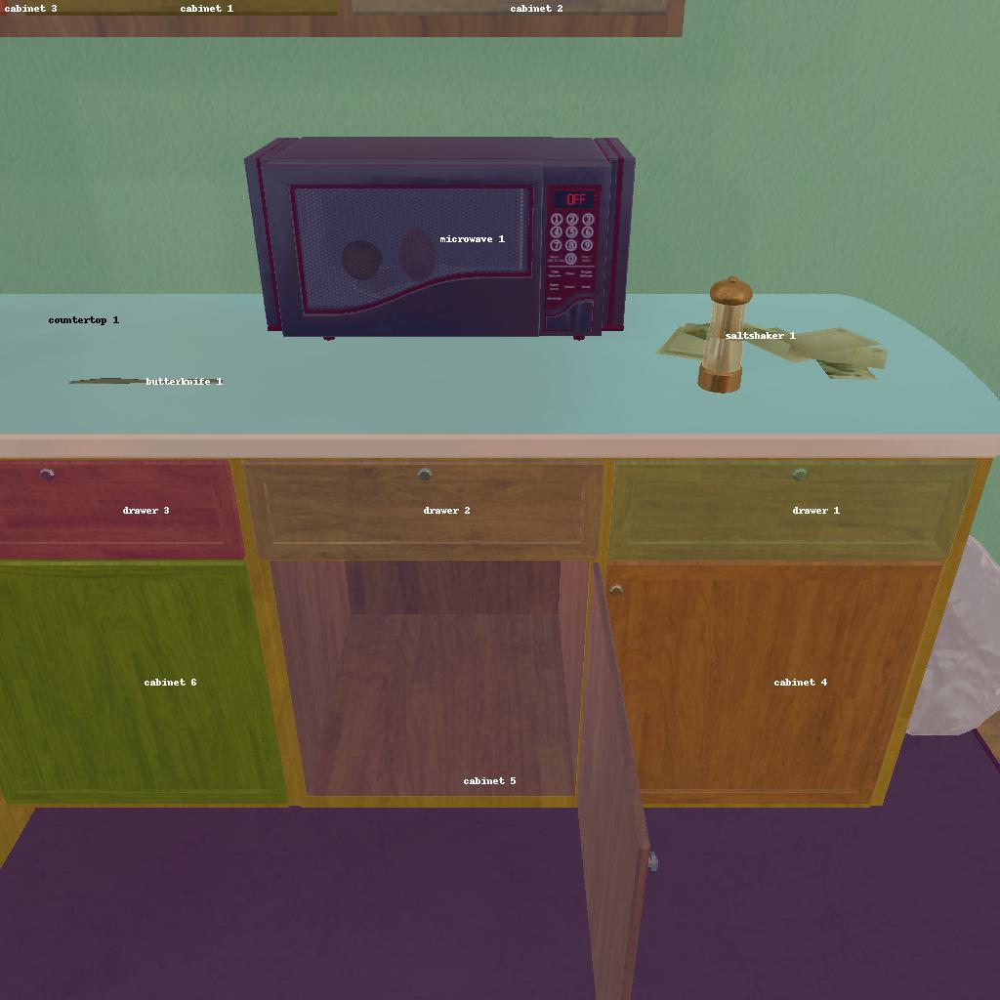

---------------------------------------------------------task: 17---------------------------------------------------------
--------------------------------------------------------------------------------------------------------------------------------------------------------------------
--------------------------------------------------------------------------------------------------------------------------------------------------------------------
Step:--------------------------------------------------------------------------11-------------------------------------------------------------------------------
----------------------------------------
VLM Prompt:
Image1:
Image2:
Image3:
**Instruction**
1. Analyze the provided image to identify all visible household objects, focusing on those relevant to the task description "cool some pan and put it in stoveburner."
2. Use the analysis of the image and the task hint "The agent must find an object of the desired type, pick it up, go to a fridge, cool the object with the fridge, then find the correct location to place it, and put it down there. The agent does not need to use the fridge button or open the fridge to cool the object, and the agent just needs to do action that is "cool the object with the fridge"." to answer the question: what is the most reasonable action in the choices for the task description "cool some pan and put it in stoveburner"?
4. Decide and write the answer using the template: The answer is: (i): , where i is the real number. If there is no desired object in the image, search every place based on **Initial Observation** to find the object. And if no one is exactly correct, choose a similar answer.
**Initial Observation**
You are in the middle of a room. Looking quickly around you, you can see cabinet (1-14), countertop (1-2), microwave (1), drawer (1-5), sink (1), sinkbasin (1), coffeemachine (1), stoveburner (1-4), toaster (1), fridge (1), diningtable (1), garbagecan (1), safe (1)
**Answer Choices**
(1): go to cabinet 2
(2): go to cabinet 3
(3): go to countertop 1
(4): go to cabinet 5
(5): go to microwave 1
(6): go to cabinet 6
(7): go to drawer 1
(8): go to drawer 2
(9): go to drawer 3
(10): go to cabinet 7
(11): go to cabinet 8
(12): go to sink 1
(13): go to sinkbasin 1
(14): go to coffeemachine 1
(15): go to cabinet 9
(16): go to cabinet 10
(17): go to drawer 4
(18): go to cabinet 11
(19): go to stoveburner 1
(20): go to stoveburner 2
(21): go to stoveburner 3
(22): go to stoveburner 4
(23): go to cabinet 12
(24): go to toaster 1
(25): go to drawer 5
(26): go to countertop 2
(27): go to fridge 1
(28): go to cabinet 13
(29): go to cabinet 14
(30): go to diningtable 1
(31): go to garbagecan 1
(32): go to safe 1
(33): open cabinet 4
(34): close cabinet 4
(35): examine cabinet 4
**Answer**
Let's think step by step by following the instructions.
----------------------------------------
----------------------------------------
Original Response:
First, we need to find a pan to cool and then put it on the stoveburner. Since the pan is not directly visible in any of the provided images, we need to search for it based on the **Initial Observation**. The most likely places to find a pan would be in cabinets or drawers near the stoveburner, as that is where cooking utensils are commonly stored.
Looking at the answer choices, we have options to go to various cabinets and drawers. Since we are looking for a pan, it would be reasonable to first check the cabinets and drawers closest to the stoveburner.
Among the options, cabinet 4 and drawer 1 are the closest visible storage spaces to the stoveburner shown in Image 3. Since we have an option to examine cabinet 4 specifically, it suggests that cabinet 4 might contain relevant objects for our task.
Therefore, the most reasonable action to take for the task description "cool some pan and put it in stoveburner" would be to first examine cabinet 4 to find the pan. Once the pan is found, we would then go to the fridge to cool it and finally place it on one of the stoveburners.
The answer is: (35): examine cabinet 4.
----------------------------------------
----------------------------------------
>>> Refine Original VLM Response and Get Pure Action: examine cabinet 4
----------------------------------------
-----------------------------------------------------------------
Running time: 10.718486785888672 seconds
Total Money: 10.81046
-----------------------------------------------------------------
-----------------------------------------------------------------
Text Observation:On the cabinet 4, you see a saltshaker 1, and a butterknife 1.
-----------------------------------------------------------------
UNSUCCEED